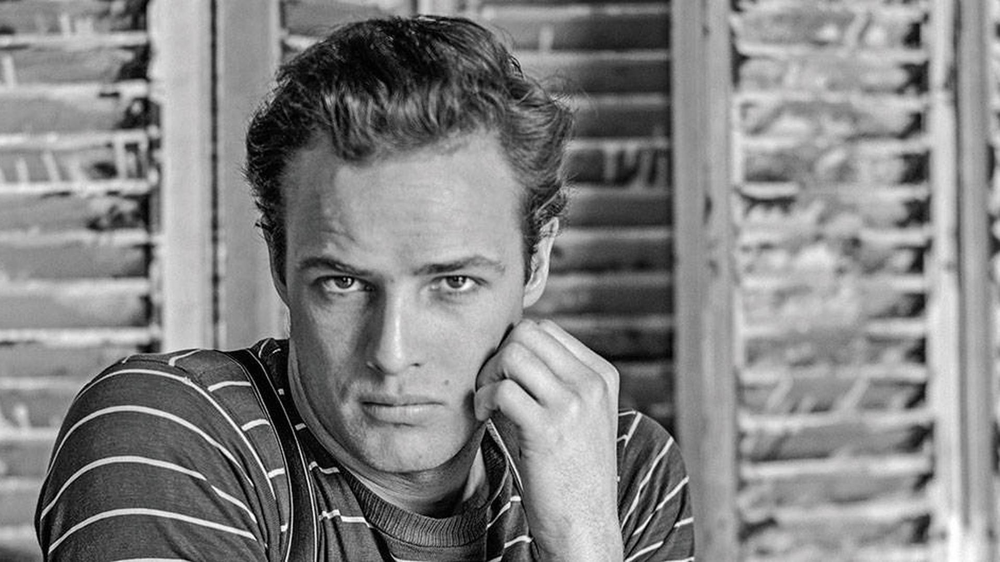
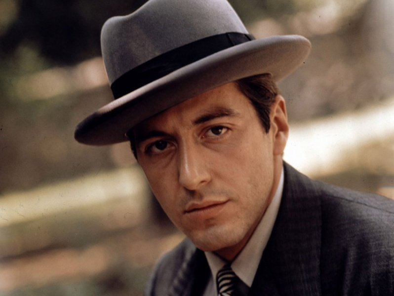
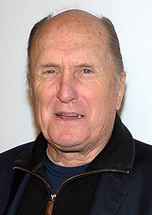
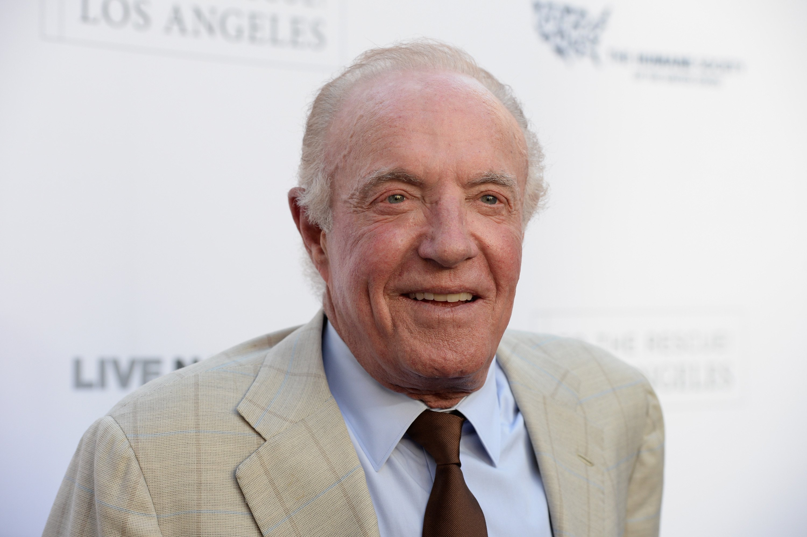
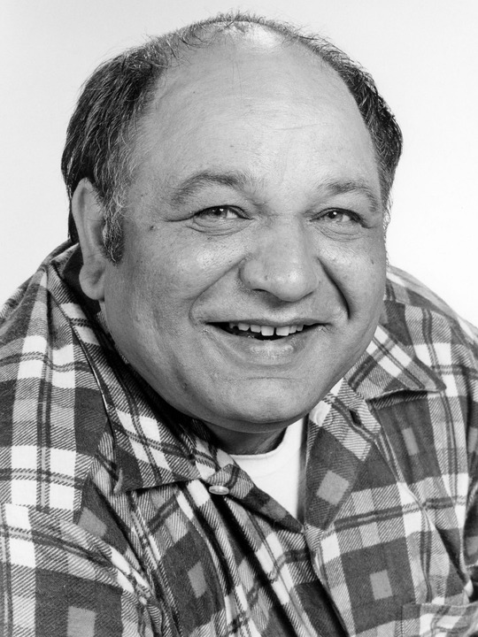
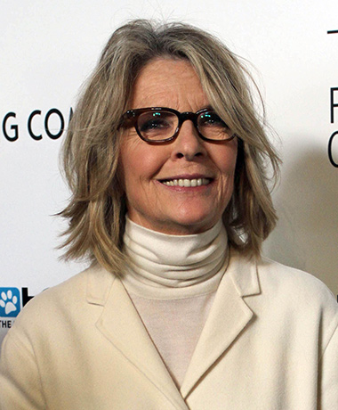

Reparto
- Vito Corleone (Marlon Brando):
Vito Corleone o Don Vito refleja la viva imagen de numerosos personajes históricos de la mafia como Frank Costello. Asimismo, representa al capo de la mafia siciliana radicada en los Estados Unidos desde 1945 hasta 1954.
Además, está considerado por algunos como la encarnación del sueño americano que con el tiempo sufre una transformación y se convierte en justiciero de las masas y de los valores familiares.

- Michael Coreleone (Al Pacino):
Michael es el hijo de Don Vito Corleone, el jefe de la familia Corleone, una familia dedicada al crimen organizado.

- Tom Hagen (Robert Duvall):
Thomas Hagen era un niño nacido de una familia de origen germano-irlandés.
Don Vito lo adoptó como hijo aunque sin formalidades legales, pues decía que sería una falta de respeto hacia los padres de Tom quitarle el apellido de sus padres.

- Sonny Corleone (James Caan):
Sonny es el primer hijo de don Vito y Carmella Corleone, y hermano mayor de Fredo, Michael y Connie. Sonny es duro, valiente, impulsivo y mujeriego; al final de su educación secundaria abandonó la escuela y se dedicó a los asuntos y negocios familiares, dirigiéndose a su padre de una manera que dice:
"Yo vi como mataste a Fanucci y vi como tiraste la pistola, sere la próxima cabeza de la familia y tendre un lugar".

- Peter Clemenza (Richard Castellano):
Clemenza se hizo amigo de Vito Corleone después de emigrar de Sicilia. Junto con Tessio, el trío se inició como matones de bajo nivel en el barrio de Little Italy en la ciudad de Nueva York. Clemenza, en concreto, se especializó en la venta de bienes robados, tales como pistolas y se convirtió en una figura clave en la creciente familia Corleone.
Vito lo mantuvo cerca a través de los años, incluso lo convirtió en padrino de su hijo Sonny, aunque esto fue para el control de su brutalidad y ambición.

- Kay Adams (Diane Keaton):
Nació en el año 1924 en Nuevo Hampshire, y es hija de un importante ministro estadounidense.
En la universidad conocería a su futuro marido, Michael Corleone , el hijo del jefe mafioso Don Vito Corleone.
